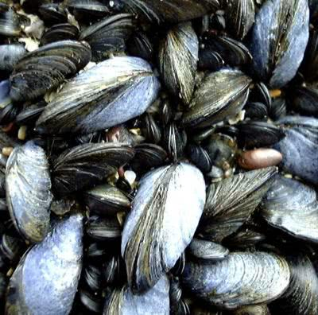

Mussels can grow to 10 cm under sheltered conditions. The blue colour is distinct and they are attached to the rock and other mussels by strong byssus threads.
This is an unusual bivalve mollusc because it does not burrow and lives on the exposed surfaces of rocky seashores. As these are not burrowers the mussels attach themselves to the rock by threads secreted by the Byssus Gland. They can move slightly as time goes on by breaking and producing new byssus threads. The glands secreting the threads are located on the foot.
The two shells give protection and close at low tide to retain water. Metabolism drops as does the heart beat, conserving energy at a time of stress. Gametes are released into the water to fertilise externally. There is then a planktonic larva which eventually settles out of the water, triggered by a negative response to light. Roughness of the substrate increases the chance of the settlement. Mussels are filter feeders. Water is drawn in through siphons and filtered using the gills. Those mussels living higher up the shore are smaller as feeding time is less. Another method of feeding involves the muscular foot being extended out of the shell, wiped over its outer surface where detritus settles and then drawn in. They are eaten by dogwhelks, starfish, oystercatchers and eider ducks as well as humans. Mussels are not helpless in the face of dogwhelk predation. They can attach byssus threads to the predator and holdfast until it starves to death.

A common starfish moving to feed on a mussel. Note the frilled edge to the mussel's extended siphons, unaware of the approaching starfish.
These bivalves are very common and widespread across European coasts from Scandinavian far north, Baltic and south to the Mediterranean. They can form very dense numbers covering rocks in the middle of rocky seashores. With the strong threads the can cope with quite extreme wave action.
Looking for a next step?
The FSC offers a range of publications, courses for schools and colleges and courses for adults, families and professionals that relate to the seashore environment. Why not find
out more about the FSC?

FEEDBACK
Do you have any questions?
Copyright © 2008 Field Studies Council

Creative Commons Attribution-Noncommercial-No Derivative Works 3.0 Licence .
Site Statistics by Opentracker